ABOUT
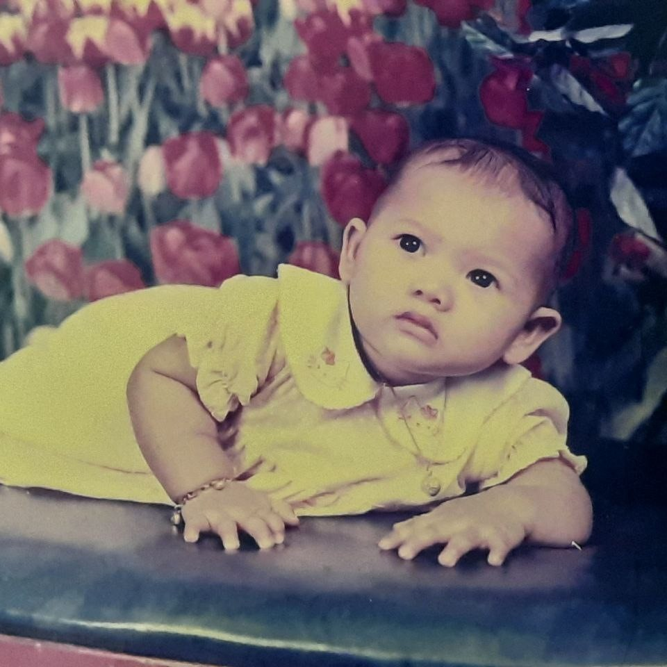
Fiza was born with the weight of 4kg. She was surely healthy in her mom's womb.
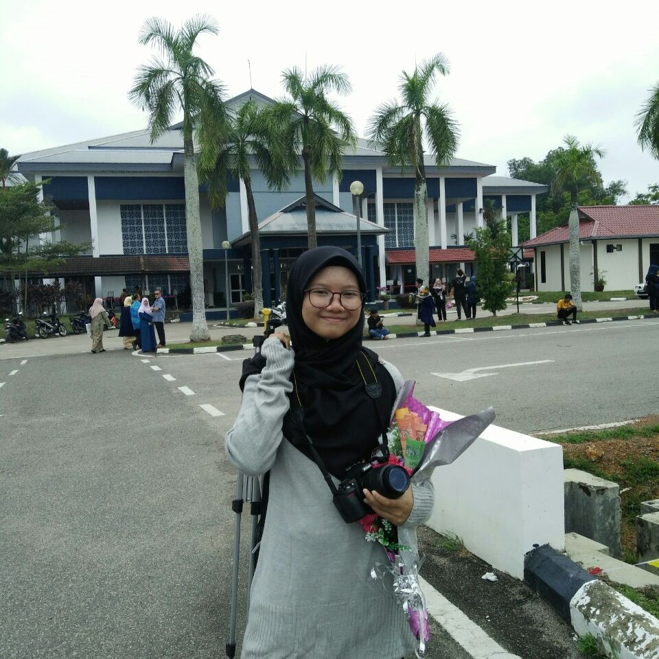
Fiza likes to take pictures and videos as memories. They are all precious to her. This picture was taken in 2019 when she became unpaid photographer for her older sister in UiTM Segamat convocation.

Fiza volunteered to involve in Graduation Tea Party as a photographer to help her friend in 2022.
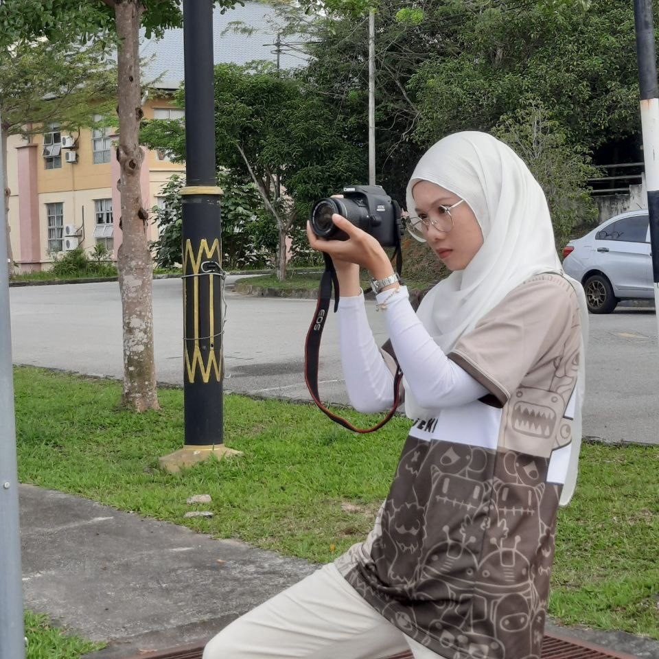
Fiza recorded pictures and videos for IMD314's assignment, about Masjid Hussain in Seremban.
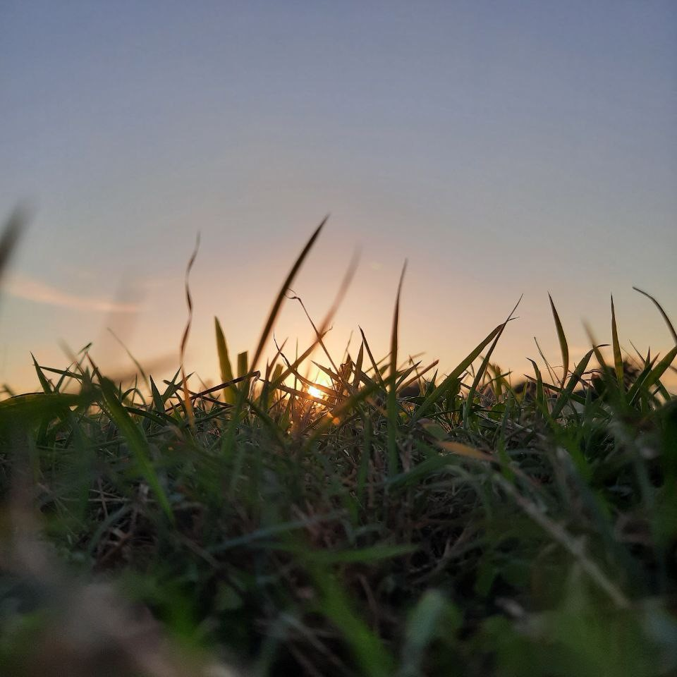
Random sunset picture Fiza took in 2020 with her mobile phone.
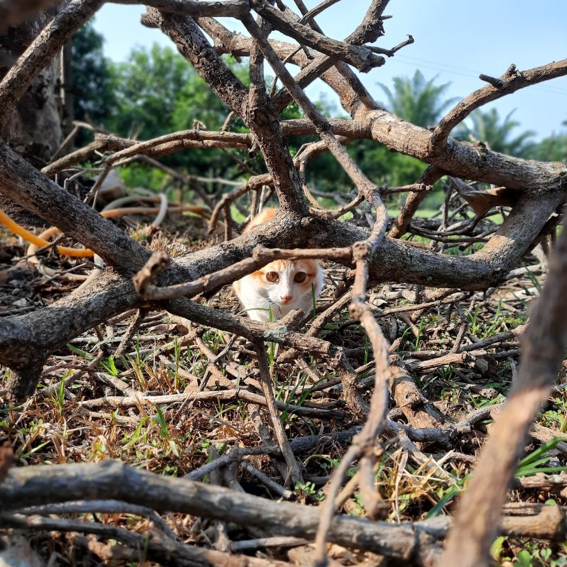
The first pet cat Fiza adopt. It was a stray kitten with no mom. It's name is Oyen. Typical orange cat's name. This is also one of the mobilegraphy Fiza took.
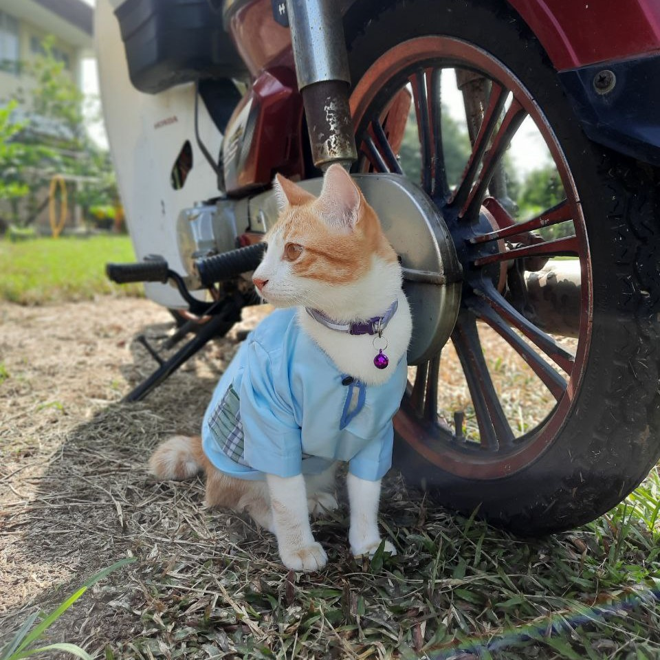
Oyen celebrated Eid Fitr with us during MCO. My mom sewed a "Baju Melayu" for him with the same color theme as us. Not so long after, Oyen went missing until now. We miss him.
(Another mobilegraphy too).
(Another mobilegraphy too).
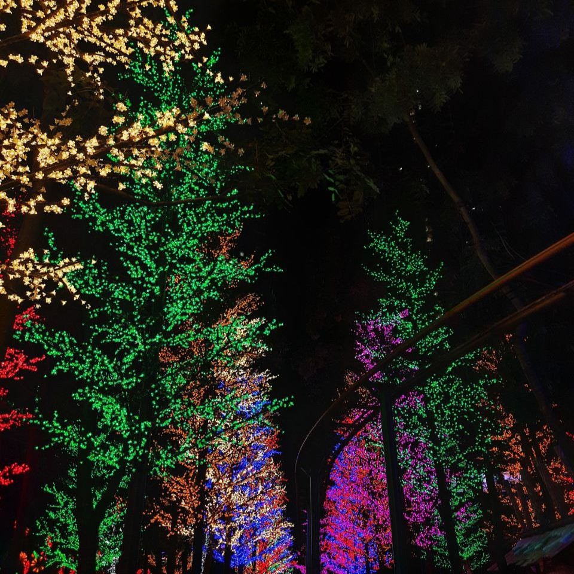
Fiza likes night more than day. She feels calm at night and it is less hotter than day. This picture was at I-city Shah Alam, the scenery there were very beautiful with colorful lights surrounded.
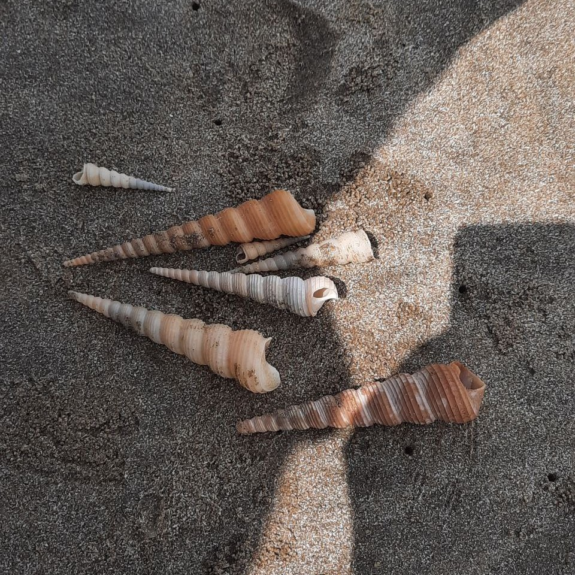
Fiza is an introverted person, but not with people she comfortable with.
This picture was taken at Mersing beach, where she took a walk with her mom alone. They collected shells to fill in a small aquarium at home.
This picture was taken at Mersing beach, where she took a walk with her mom alone. They collected shells to fill in a small aquarium at home.
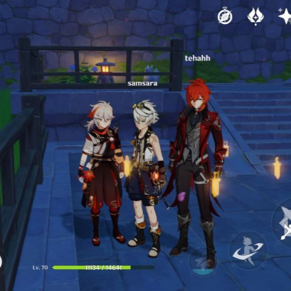
Fiza loves to play "Genshin Impact" with her online friends. She knew her online friends ever since MCO through YouTube livestream and eventually get closer until now.

Fiza also loves spending her free time alone by watching anime, drama, movie & show.
The picture shows her Top 3 favorite.
The picture shows her Top 3 favorite.
- Demon Slayer (Anime)
- Runningman (Korean Show)
- Marvel: Avengers (English Movie)
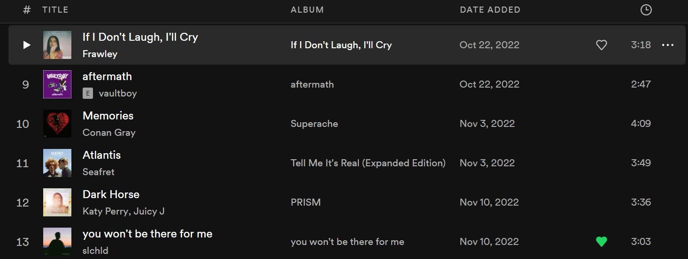
Fiza loves listening to music especially K-POP, hiphop & RnB songs. When she want to focus on doing her works and avoid being sleepy, she would play those kind of playlists. The songs above is in her playlist she would play every single time.
Fiza has many favorite singers, but her Top 3 are as followings:
Fiza has many favorite singers, but her Top 3 are as followings:
- Bruno Mars
- Charlie Puth
- Megan Trainor
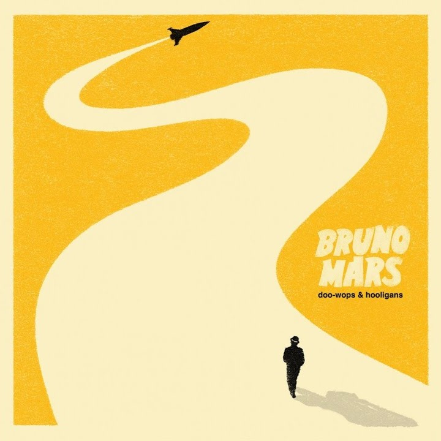
She finds editing is fun too.
This is the preview video for IMD314's assignment edited by Fiza.
Fiza also likes to edit videos of herself
& this is one of them.